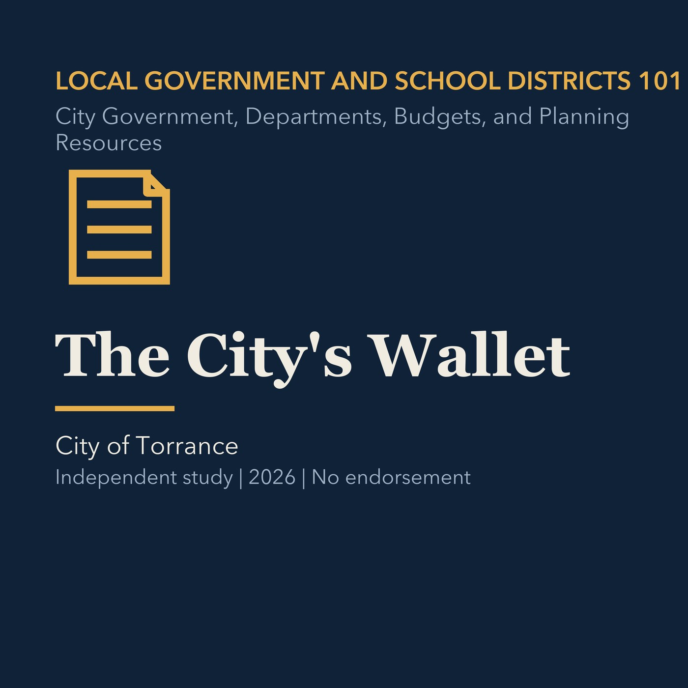

EPISODE 06
The City's Wallet
Distinguishes city funds and explains major municipal revenue, spending, reserve, and voter-approval choices.

- Stable GUID
3ae14d5d-33ff-5a51-bce0-e73f99d20196- Release
- local-government-101-v2026.2
- SHA-256
0fcdf741cdfd4943bd42e8e84cb585730ab3b934447c6dcc770f6fa60d758f62